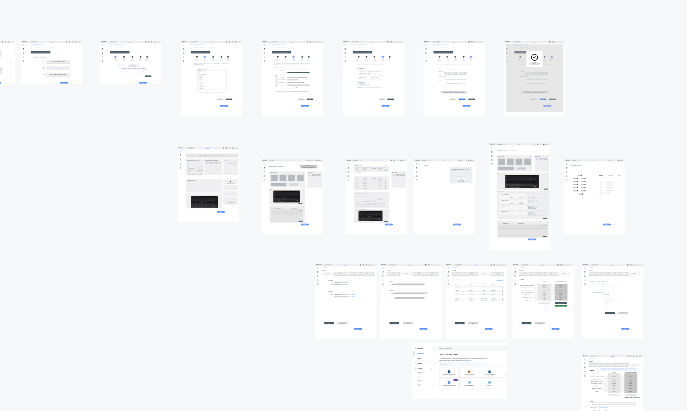
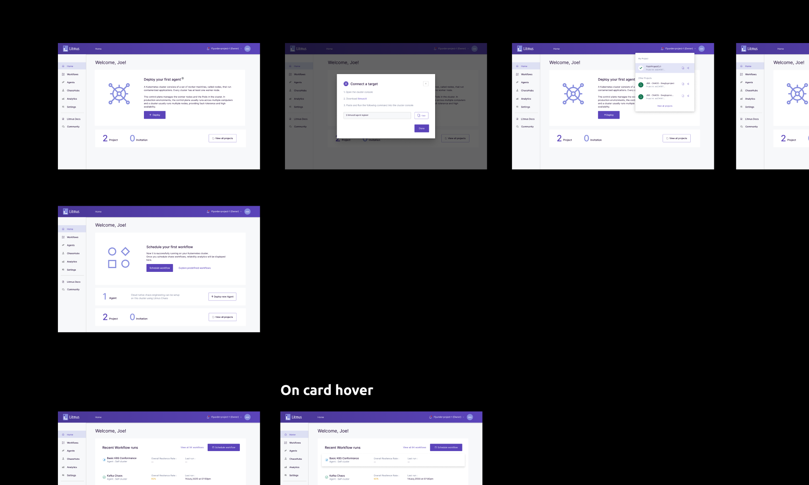
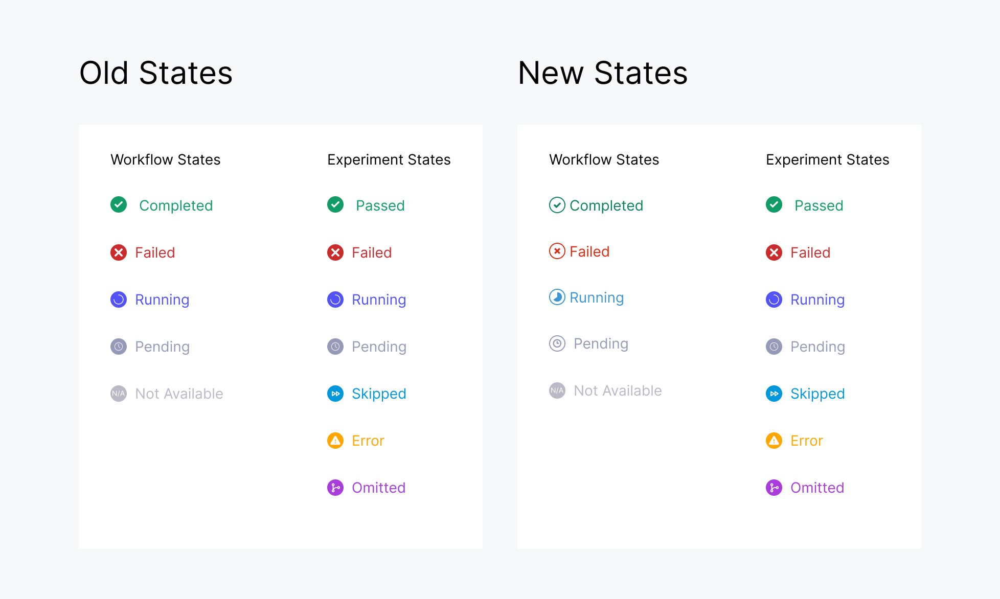
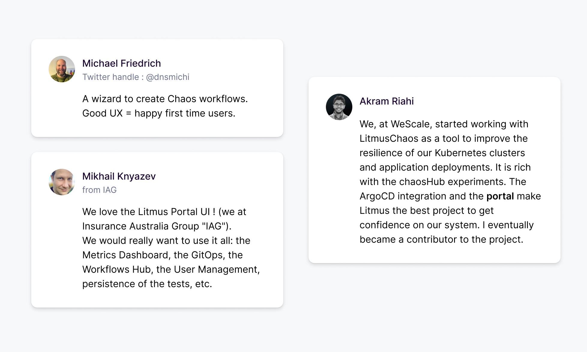

LitmusChaos 2.0
Run chaos-workflows with UI
To comply with my non-disclosure agreement, I have omitted and obfuscated confidential information in this case study. All information in this case study is my own and does not necessarily reflect the views of MayaData or ChaosNative.
The problem
Chaos Engineering is the discipline of experimenting on a system in order to build confidence in the system’s capability to withstand turbulent conditions in production. We need to identify weaknesses before they manifest in system-wide, aberrant behaviors. Systemic weaknesses could take the form of: improper fallback settings when a service is unavailable; retry storms from improperly tuned timeouts; outages when a downstream dependency receives too much traffic; cascading failures when a single point of failure crashes; etc. We must address the most significant weaknesses proactively, before they affect our customers in production. Doing chaos engineering is not easy since it is a very new trend, an emerging trend and everyone is trying DevOps, updating the skillset. Litmus 1.x is very famous however only experienced users were able to use but the users who want to learn Chaos Engineering or just testing their Kubernetes Pods was not easy. So I was given the task to create the Web UI of Litmus, with a simple UX so that even a new person not so aware of Chaos Engineering can use it to check resiliency of their system.
Part 1 : Knowing the userbase and creating user stories
When I first joined this project I was hearing first time words like Chaos Engineering, Kubernetes and Site Reliability Engineer. So it was difficult to design a product which I don’t understand and in market Chaos Engineering is mainly done by Command Line Interface (CLI) tools, not much to take inspiration. Thanks to ChaosNative, they made the task bit easier as with SREs in our companies I was able to nderstand their requirements how they want to visualise the things, how they want to access the features and all. So for around 2-2.5 weeks we created user personas and stories, figuring out what special things can made SREs life easier and all.
Part 2 : Creating wireframes
Medium-fidelity wireframes were created and then was validated by SREs and other developers for the UX and informations needed.
Part 3 : Using the Litmus Design System to fill color to our wireframes
With Litmus Design System task was easier as I have proper guideline for colors and the components properties. So after assigning the colors to our palette and created our components in design, I applied in design and things were looking great.
Part 4: UX Testing
The UX Testing is a very mixed experience as I understood one thing that people are not so use to see so many design frames on Figma canvas, so one way to give my testers an almost real experience of the product was to create a prototype and actually it helped as now many people started giving their valuable opinions. One interesting fact was when I first created the states of workflow & experiments I used same icons and colors for similar tate names of workflow and experiments. In Chaos Engineering, workflow is collection of one or more experiment, your one experiment has failed that doesn’t mean your other experiments will fail and also doesn’t mean your workflow has failed. Chaos Engineering is by definition that only if one of your component fails we should make sure that other components hasn’t failed. So in one UX Testing I found that users were getting confused between the workflow and experiment states as the looks bit similar. So here is what I did :
So you can see making the icons with filled colors was creating the confusion, so I tried making the workflow state icons outlined and also change the colors a little bit and turned out the users were now able to analyse the workflows better.
The Impact
With Litmus 2.0 Beta rolled out and showcasing in events like KubeCon Europe 2021 , EveryoneCanContribute Cafe, great feedbacks came from Twitteratis and developers.
